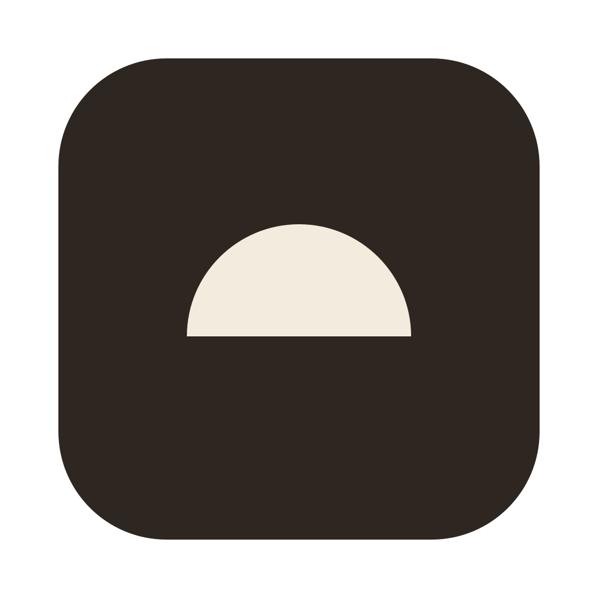
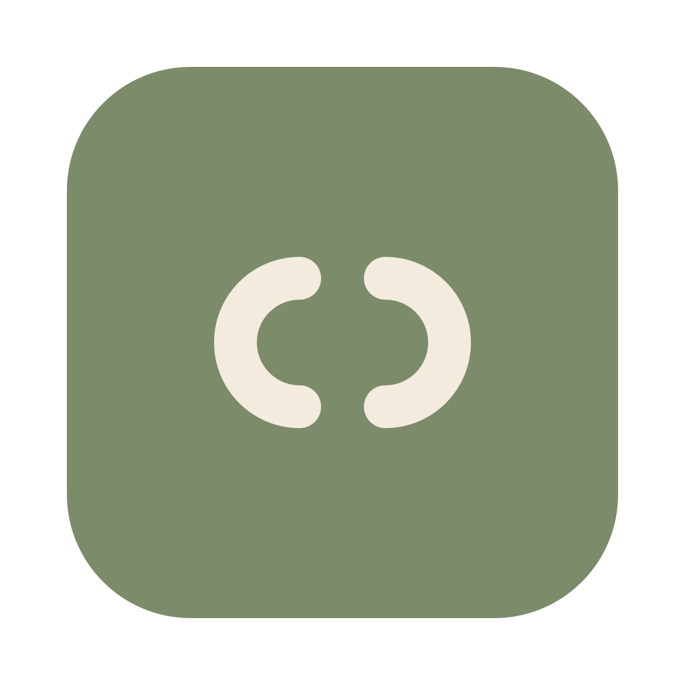
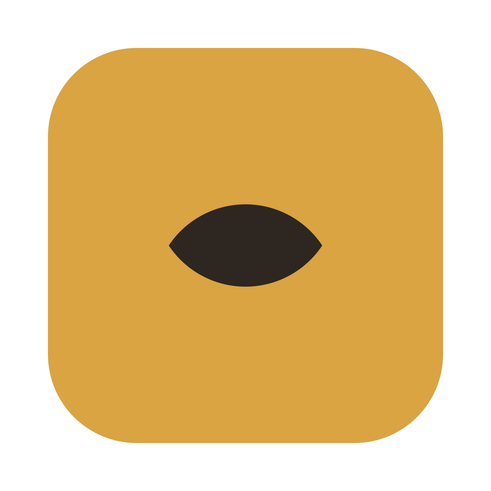
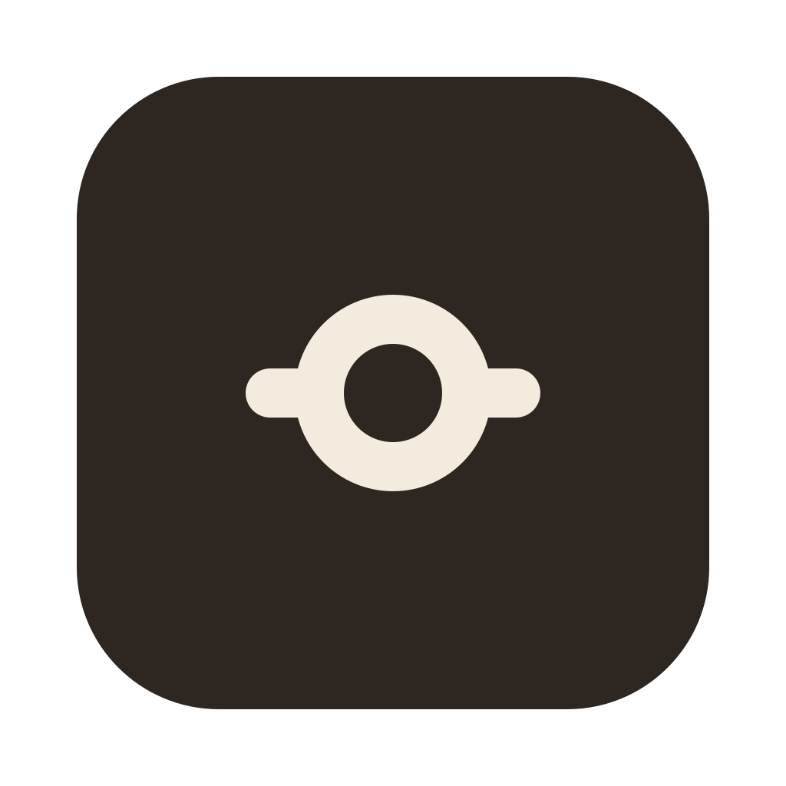

A single hand turns a quiet wheel, making prediction and adjustment the defining gesture.

2. Taking FormThree equal-weight lines close into a figure, expressing an idea becoming a concrete model.

3. RevealOne solid half-disc suggests the visible half of an idea whose hidden structure is waiting to be revealed.

4. ReflectionTwo mirrored arcs frame the same empty space, suggesting one form understood through another.

5. LensTwo opposing arcs become one solid lens, a minimal metaphor for seeing an idea through a model.

6. HingeTwo joined lines describe a movable angle, reducing interactive learning to one clear change in geometry.
An unfinished circular sweep captures a line on its way to becoming a complete form.

8. ControlA single circular control interrupts a straight track, making hands-on exploration the entire symbol.